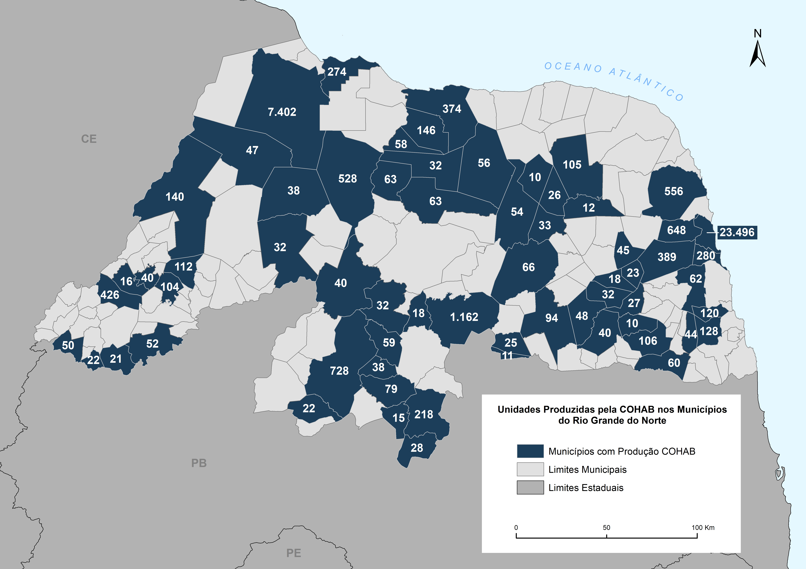

Resumo
O inventário da produção da Companhia de Habitação do Rio Grande do Norte – COHAB/RN representa o passo inicial na organização e sistematização de um acúmulo de pesquisas conduzidas pelo grupo “Estúdio Conceito”. Este grupo está vinculado ao Programa de Pós-graduação em Estudos Urbanos e Regionais (PPEUR) e ao Núcleo de Políticas Públicas (NAPP), ambos integrados ao Instituto de Políticas Públicas (IPP) da Universidade Federal do Rio Grande do Norte (UFRN). Este é um projeto construído por muitas mãos, com uma extensa lista de colaboradores. É uma síntese de pesquisas que vêm sendo elaboradas há alguns anos e que contaram com a colaboração de vários órgãos e pesquisadores da Iniciação Científica, do mestrado e do doutorado. Essas pesquisas mobilizaram um número considerável de parceiros internos e externos à UFRN, e de materiais gentilmente compartilhados: o Laboratório de Imagens do Departamento de História; a Datanorte (Cia de Processamento de Dados do Rio Grande do Norte); a Secretaria Municipal de Meio Ambiente e Urbanismo de Natal/RN; o acervo do professor Dr. Márcio Moraes Valença, contendo os partidos urbanísticos dos conjuntos habitacionais de Natal; os arquivos do Promorar das ações de Regularização Fundiária coordenadas pelo Professor Dr. Almir Mariano de Sousa Júnior; fichas técnicas dos empreendimentos, disponíveis na Biblioteca Prof. José Marcelino Monteiro da Costa do Núcleo de Altos Estudos Amazônicos (NAEA) da Universidade Federal do Pará (UFPA), localizadas pelo professor Raul Ventura Neto; os acervos dos jornais Tribuna do Norte e Diário de Natal. O inventário aqui apresentado traz as produções habitacionais que foram destinadas à demanda aberta (população com rendimento de até cinco salários mínimos) e às iniciativas via Promorar. Trata-se da sistematização de informações de diversas ordens: número de unidades, anos de produção, responsáveis pelos projetos, exposto em um material gráfico, sobretudo cartográfico, levantamento fotográfico produzido ou catalogado pelo grupo. A atuação da Cohab/RN foi concentrada nas cidades de Natal e Mossoró, como já apontado em outras publicações (Medeiros, 2018), e consequentemente essas cidades possuem maior protagonismo neste inventário. No entanto, há também a necessidade de desbravar outros territórios, mesmo que eles não detenham igual volume de informações. Em alguns casos, por exemplo, não é possível sequer especificar a localização intraurbana exata dos empreendimentos nesses territórios, limitando o pesquisador apenas ao município. Ao longo da pesquisa, foram identificadas outras produções habitacionais com financiamento do BNH, que não estão no catálogo da COHAB/RN nem foram incluídas nessa primeira publicação. Essas iniciativas são relativas a projetos executados em situação críticas e/ ou emergenciais, com processos burocráticos muito simplificados, dificultando a posterior obtenção precisa de dados. Assim, não foram contempladas as produções na cidade de São Rafael (reconstruída após o erguimento da barragem Armando Ribeiro Gonçalves), ou as unidades, também alvo de reconstrução, da cidade de Santa Cruz, além de outros casos similares. O levantamento de campo foi possível, sobretudo, com os recursos disponibilizados pelo CNPq, na chamada MCTIC/CNPq n. 28/2018, processo 424447/2018-5, e a bolsa Produtividade em Pesquisa - PQ-2 da coordenadora do projeto. Registra-se, também, o apoio da Coordenação de Aperfeiçoamento de Pessoal de Nível Superior – Brasil (Capes): código de financiamento 001, para os trabalhos desenvolvidos no âmbito do PPEUR. O percurso do texto inicia-se por Natal, que representa o ponto de partida, as primeiras iniciativas da COHAB/RN, e se estende, abrindo um raio de alcance, até abranger os pequenos municípios do estado. Cada trecho é de autoria de pesquisadores vinculados ao grupo de pesquisa “Estúdio Conceito”. É importante ter em mente que este tipo de produto é frequentemente consultado de forma fragmentada, e essa estrutura aparentemente não uniforme do encadeamento não chega a ser um inconveniente aos leitores. O propósito subjacente a este inventário é alimentar três importantes eixos: o primeiro diz respeito à disseminação da produção, tornando-a acessível a pesquisadores e demais interessados; o segundo centra-se no fornecimento de subsídios para pesquisas futuras, enriquecendo a base de conhecimento disponível; o terceiro consiste na possibilidade de proporcionar uma ferramenta valiosa aos gestores, permitindo- lhes identificar a produção da COHAB em seus municípios e compará-la com as demais localidades, enriquecendo, assim, o diálogo com o planejamento das políticas públicas urbanas.
Região Administrativa Oeste

Sobre a região
A Região Administrativa Oeste de Natal foi a primeira da cidade a acolher um conjunto habitacional com mais de 400 unidades construídas. Tratou-se do conjunto Cidade da Esperança, cujas primeiras 504 unidades foram construídas sob a responsabilidade do órgão antecessor da Companhia de Habitação do Rio Grande do Norte (COHAB/RN) – a Fundação de Habitação Popular (FUNDHAP) – com recursos da Agência dos Estados Unidos para o Desenvolvimento Internacional (USAID) e aprovação da Superintendência de Desenvolvimento do Nordeste (SUDENE). As demais unidades já ficaram a cargo da COHAB/RN, vinculada ao Banco Nacional da Habitação (BNH). Essa região também recebeu o primeiro programa do BNH voltado para atender população removida de favelas, trata-se do Promorar. Esse programa iniciou sua atuação em Natal — e também no país, aliás — com a entrega do conjunto Santa Esmeralda (1980), no bairro do Bom Pastor. Outro Promorar construído pela COHAB/RN nessa região foi o conjunto Felipe Camarão (1982).
Localização do conjunto
Com um projeto concebido pelo arquiteto Ubirajara Galvão, o Cidade da Esperança foi dotado de um partido urbanístico desenvolvido pelo arquiteto Getúlio Madruga, em que a toponímia das ruas homenageia os estados (avenidas principais) e municípios (ruas adjacentes) do Brasil. Foram disponibilizadas áreas para a construção de equipamentos de uso coletivo e de uso exclusivo para o comércio e a indústria (na avenida Rio Grande do Sul). Nesse conjunto foi construído o primeiro Centro Social Urbano (CSU) do Brasil (Tribuna do Norte, 11 de março de 1977). O Cidade da Esperança deu nome ao bairro em que está localizado, que foi oficializado pelo Decreto-Lei no 1.643, de 9 de junho de 1967, na administração do então Prefeito Agnelo Alves. O bairro teve seus limites redefinidos através da Lei no. 4.330, de 5 de abril de 1993, oficializada quando da sua publicação no Diário Oficial do Estado em 7 de setembro de 1994 (NATAL, 2008).

A designação Cidade da Esperança já tinha sido utilizada por Aluízio Alves em outros momentos: primeiro, em referência à cidade de Natal, durante a campanha para o governo (Tribuna do Norte, 15 de junho de 1961, p. 1); depois, num projeto apresentado em um dos seus discursos, referente a uma cidade voltada para as crianças — com administração e todo o gerenciamento feito pelos menores (Tribuna do Norte, 16 de junho de 1961, p. 1). Na primeira etapa, previa-se a construção de casas tipo embrião, que poderiam ser ampliadas. Eram duas as tipologias habitacionais: o tipo A, com 42 m2 de área coberta — tendo sala, cozinha, banheiro, terraço e dois quartos, aos quais se podia adicionar mais um — e o tipo B, com 36 m2 de área coberta — sala, cozinha, banheiro, terraço e um quarto, podendo ser adicionados mais dois (Tribuna do Norte, 1964, p. 5). O lote dos imóveis tinha dimensão de 9x20 metros. A designação Cidade da Esperança já tinha sido utilizada por Aluízio Alves em outros momentos: primeiro, em referência à cidade de Natal, durante a campanha para o governo (Tribuna do Norte, 15 de junho de 1961, p. 1); depois, num projeto apresentado em um dos seus discursos, referente a uma cidade voltada para as crianças — com administração e todo o gerenciamento feito pelos menores (Tribuna do Norte, 16 de junho de 1961, p. 1). Na primeira etapa, previa-se a construção de casas tipo embrião, que poderiam ser ampliadas. Eram duas as tipologias habitacionais: o tipo A, com 42 m2 de área coberta — tendo sala, cozinha, banheiro, terraço e dois quartos, aos quais se podia adicionar mais um — e o tipo B, com 36 m2 de área coberta — sala, cozinha, banheiro, terraço e um quarto, podendo ser adicionados mais dois (Tribuna do Norte, 1964, p. 5). O lote dos imóveis tinha dimensão de 9x20 metros.